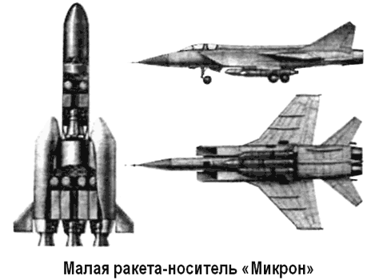
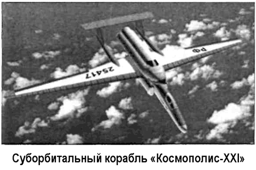
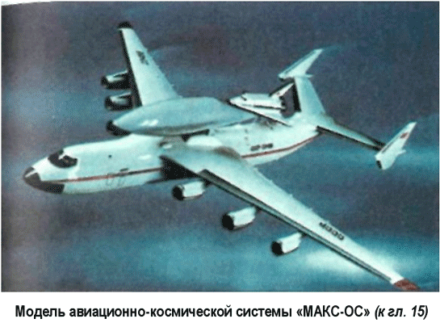
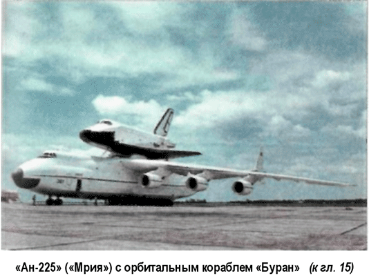

Суборбитальный корабль «Космополис-XXI»
Еще один проект в рамках конкурса «Икс-Прайс» разрабатывается в Акционерном обществе «Суборбитальная корпорация» при участии Экспериментального машиностроительного завода имени Мясищева.
Запуск ракетного модуля «Космополис-XXI» с пассажирской капсулой осуществляется с самолета-носителя при выполнении динамического маневра «горка» на высотах от 17 до 20 километров. В качестве самолета-носителя используется высотный самолет «М-55» («Геофизика») разработки завода имени Мясищева. Его летные характеристики таковы: максимальная скорость — 2650 км/ч, практический потолок — 22 километра, максимальная дальность — 35004000 километров. Ракетный модуль «Космополис-XXI» выполнен в виде цилиндрического объекта с небольшими складными аэродинамическими поверхностями и состоит из спасаемой трехместной пассажирской капсулы, двигательного блока, отсека оборудования с системами управления, жизнеобеспечения и спасения. Ракетный модуль устанавливается на высотный самолет-носитель «Геофизика» на специальных узлах крепления, снабженных управляемыми механическими замками.
Между самолетом-носителем и ракетным модулем осуществляется электрическая связь при помощи кабеля с быстроразмыкаемым электрическим разъемом. Самолет-носитель оборудуется контрольно-записывающей аппаратурой и системой тестирования работоспособности ракетного модуля.

Пассажирская капсула выполнена в виде оживального тела вращения. Внутри капсулы размещаются три пассажирских кресла, представляющие собой анатомические ложементы, изготавливаемые по индивидуальному заказу на каждого пассажира. Для снижения посадочных перегрузок пассажирские кресла снабжены системой демпфирования.
Пассажирская капсула имеет иллюминаторы, закрываемые изнутри светофильтрами. Система жизнеобеспечения позволяет поддерживать внутри пассажирской капсулы нормальные условия для жизнедеятельности космических пассажиров без применения индивидуальных дыхательных приборов.
Для управления и контроля режимов полета капсула снабжена рычагами управления и панелью приборов. Посадка пассажиров в капсулу и эвакуация из нее осуществляются через герметичный люк.
Порядок полета выглядит следующим образом. Ракетный модуль устанавливается на самолет-носитель и фиксируется механическими замками с электрическим управлением. Система энергопитания и контроля работы бортового оборудования ракетного модуля и самолета-носителя соединяются электрическим кабелем при помощи быстроразмыкающего разъема. Пассажиры-космонавты усаживаются в пассажирской капсуле ракетного модуля. Входной люк герметизируется и проверяется герметичность в пассажирской капсуле. Самолет-носитель с установленным на нем ракетным модулем набирает заданную высоту полета и разгоняется для выполнения маневра «горка». При его выполнении самолет-носитель вместе с ракетным модулем набирает дополнительную высоту до 20 километров и угол наклона траектории достигает 40–60 к горизонту. В этот момент происходит размыкание механических замков и включается ускоритель на ракетном модуле, который обеспечивает отход ракетного модуля от самолета-носителя.
При отходе на безопасное расстояние автоматически включаются ракетные двигатели основной двигательной установки ракетного модуля. Сразу после разделения самолетноситель выполняет резкий маневр ухода со снижением в сторону от траектории ракетного модуля.
Набор высоты ракетного модуля выполняется по оптимальной траектории, постепенно переходя до вертикального положения. После отработки ракетных двигателей происходит расстыковка пассажирской капсулы и двигательного отсека. Пассажирская капсула, получившая импульс, продолжает по инерции движение вверх вплоть до точки остановки (точки наибольшего набора высоты). При снижении по бокам пассажирской капсулы происходит раскрытие небольших аэродинамических поверхностей, снабженных рулями, которые обеспечивают управляемый аэродинамических спуск. Это позволит снизить возникающие перегрузки и выполнить маневр по выбору посадочной площадки. Посадка выполняется по-самолетному на выпускаемые шасси. В качестве альтернативного варианта возможна посадка пассажирской капсулы на парашюте.

Кампания фонда «Икс-Прайс» по организации конкурса на разработку космического корабля, способного выполнять недорогие суборбитальные полеты, является многообещающим предприятием. Привлечение к конкурсу различных групп специалистов позволит на альтернативной основе выбрать рациональные технические идеи, удачные конструктивные решения и с привлечением минимальных финансовых средств решить актуальнейшую задачу. И кто знает, может уже завтра любой из нас сможет купить билет в космос…

